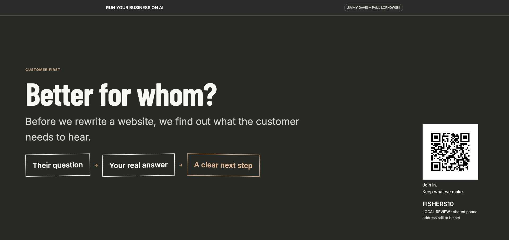
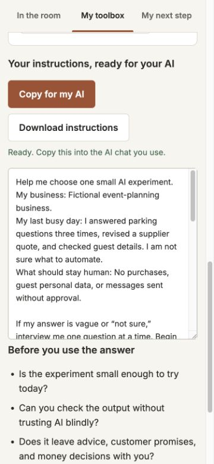
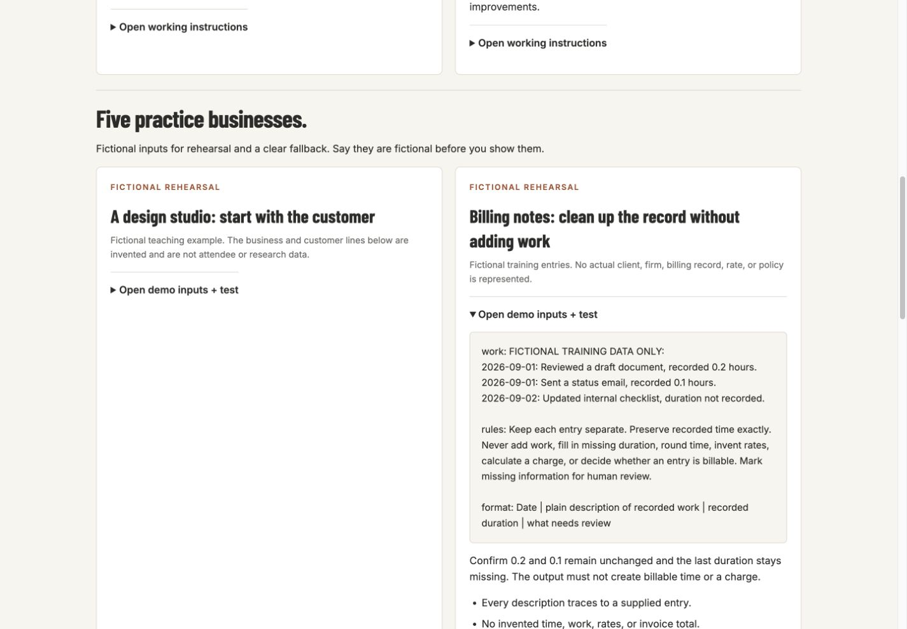

Earlier room prototype
See the bigger prototype.
We also built a phone companion, a private control desk for Jimmy and Paul, and a big-screen view that work together on a local server. These screenshots show that fuller prototype. The public tool lab lets you try individual parts. Connecting the audience’s phones still needs event hosting and a rehearsal.
The screenshots use fictional examples. The QR code shown belongs to the earlier local build; use this hub’s links to try the public tools.

What the earlier local backend exercised
Shared behaviors, kept inside one computer.
The prototype supported shared poll rounds with held results, moderated questions, private notes, host control, phone exercises, and 14 stage slides. Its local test record covered 20 API scenarios. Those checks were against the local working package, not a public shared event service.
The current hub keeps the review path portable: localStorage for the educational poll, question, and notes demo; static JSON for tools and slides; no code, database, key, token, or private record is published.

Phone companion
One fictional owner could choose a job, see instructions, copy or download them, and keep a Friday plan. The current tool lab carries the prompt behavior forward without a room backend.

Host desk
Host-side rehearsal used five clearly fictional practice businesses, operator prompts, held poll results, moderated questions, and notes. No attendee records are included in this public release.
Stage view
The big-screen path included a customer-first makeover and a QR placeholder labeled local review. The proposed slides page is the portable review of that 14-slide sequence.
How to use this page
Judge the idea, then judge the release.
Use this page to understand the full prototype scope. Use the tool lab to test the current portable interaction and the proposed slides to review the run of show. The real event still needs a chosen HTTPS host, physical phone checks, a verified booking route, and a full rehearsal.